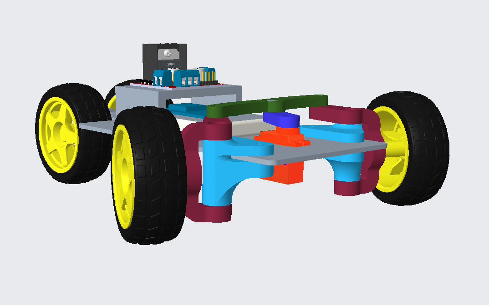
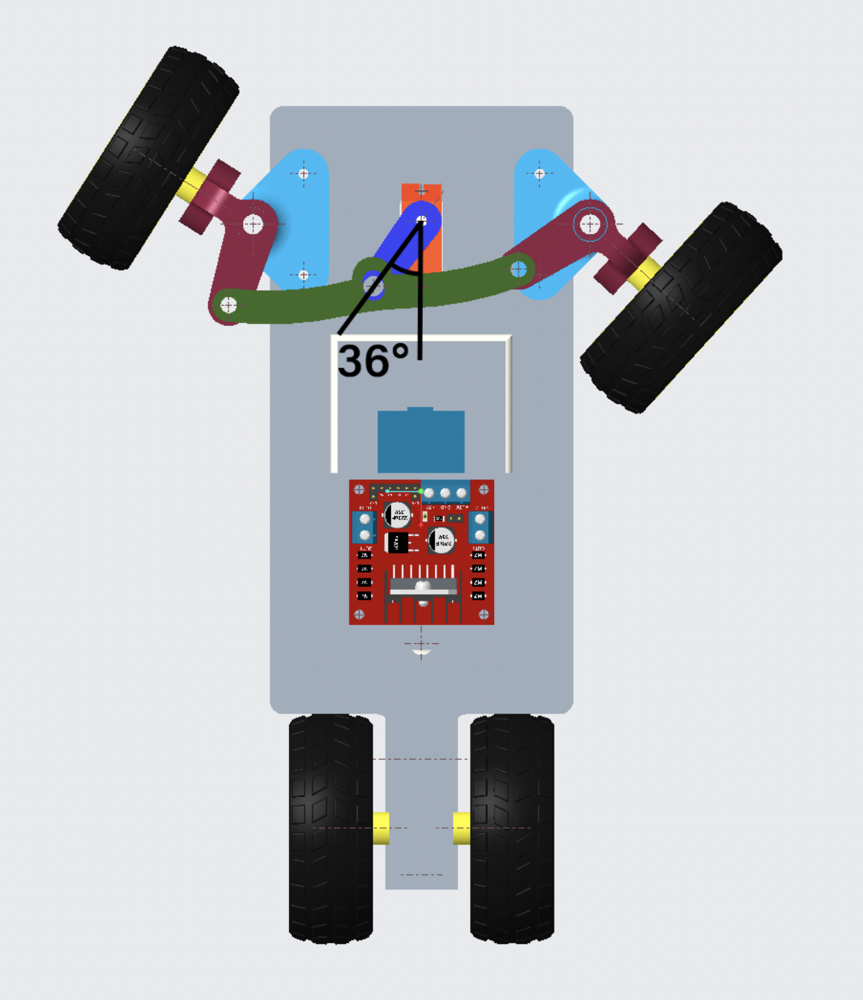

Remote-Controlled Toy Car
FALL 2021 - Created as part of ME 444: Toy Design, this remote-controlled toy car is my first experience creating a mechanical system that moves together.
I individually designed the car's steering mechanism based on the Ackerman steering linkage system. I also conducted engineering modeling to determine the servo motor maximum angle range to avoid interference between the wheel and chassis.
The Ackerman Steering Mechanism
I decided to implement the Ackerman steering mechanism after researching different designs in order to maximize the strength and reliability of parts, as we were limited to creating our own parts through 3D printing. The linkage consists of a spindle mount (light blue), bell-crank link (green), knuckle arms (red), and a servo arm (dark blue) that interfaces with the servo motor, and all parts were created in Creo Parametric.
I also completed interference analysis to determine the maximum servo motor angles. Calculations were initially done by hand, then verified using Creo's measurement and global interference toolkits. Maximum angle was determined to be 36 degrees, though the limiting angle was set to be 30 degrees to provide a safety margin.
The two knuckle arms should intersect at the center of the real axle in an Ackerman steering linkage design. Beyond this, being a part of Purdue Society of Women Engineers' Grand Prix team taught me about the basics of racecar engineering, so I designed the car to be self-centering using a small positive caster angle.